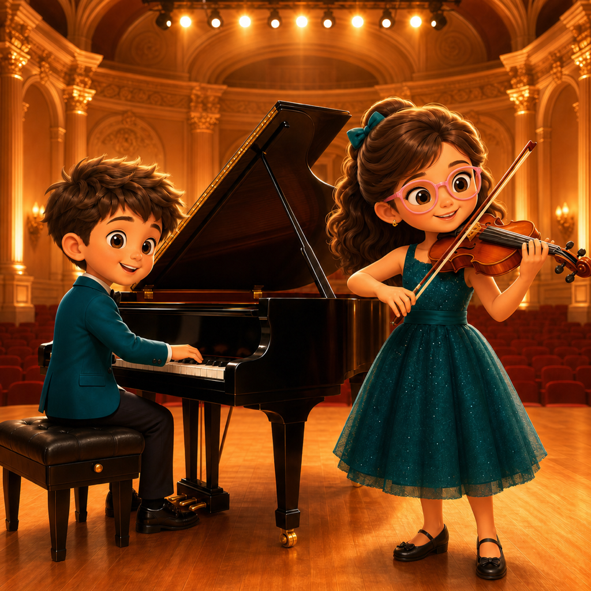
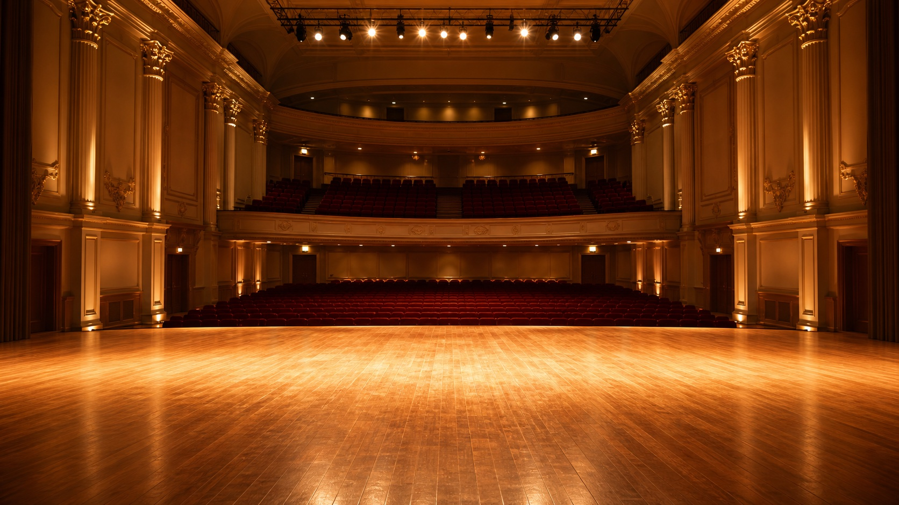

iPhone · 審核通過｜App Store 同步中把家裡錄下的演出，放進更適合分享的舞台。
MagicStage 讓家長、學生與音樂學習者直接拍攝或匯入單人表演影片，換上舞台背景、檢查人物與樂器前景，再輸出保留原音的短影片。

從一段家庭錄影開始
MagicStage 的目標很具體：把客廳、練習室或教室裡拍下的單人演出，整理成背景更乾淨、氣氛更完整的舞台風格影片。可以直接用 iPhone 拍攝，也可以從照片或檔案匯入已有的 MP4、MOV 影片。
匯入後先調整片段起點與終點，再選擇古典音樂廳、櫻花演奏會、星空舞台等內建背景，或從自己的照片與檔案加入背景圖片。
拍攝或匯入一段單人表演，確認方向並裁切需要的片段。
選擇內建舞台或自己的圖片，產生人物與新背景合成預覽。
檢查人物與樂器、調整輸出比例與畫質，再保存或分享完成影片。
先看預覽，也留下可以修正的地方
人物分離不是把畫面中央硬切出一塊，而是逐格分析表演者與接觸到人物的前景物件。若琴弓、樂器、譜架或其他前景在預覽中被漏掉，可以查看開頭、中段與結尾三個時間點，直接點選需要保留的物件，再重新產生預覽。
這種修正方式適合少量補強，不是逐格繪製遮罩。MagicStage 會把原始畫面與舞台版本放在一起比較，讓使用者在輸出前先確認人物輪廓、樂器與背景是否合適。
為短影片準備的輸出選項
適合什麼樣的影片
目前最適合一位清楚可見的表演者、固定或大致穩定的鏡頭、一般室內光線，以及人物、樂器與房間之間具有可辨識差異的短影片。鋼琴、小提琴、大提琴、吉他等有明確主體的演奏，是目前優先驗證的場景。
低光、快速晃動、嚴重遮擋、透明物件、多人演出或非常細的弓弦，仍可能出現邊緣光暈、前景漏選或誤保留房間物件。產品頁會如實保留這些邊界，而不是把它描述成專業逐格去背工具。
在 iPhone 上完成，素材留在使用者手中
人物與前景分析、背景合成與影片輸出都在 iPhone 上完成，不需要把家庭影片送到開發者伺服器。相機、麥克風與照片權限只在拍攝、匯入背景、保存完成影片等對應操作中使用。
MagicStage 的現行介面與權限說明已整理為 20 種語言，讓家庭與學習者能用熟悉的語言完成影片製作。
MagicStage 1.0 已通過 App Review，正等待 App Store 頁面完成公開同步。商店連結生效後，即可在 iPhone 下載。
Move a home performance onto a stage made for sharing.
MagicStage lets parents, students, and music learners record or import a single-person performance, replace the room with a stage, review the performer and instrument foreground, and export a short video with the original sound.
Start with one home recording
MagicStage has a focused purpose: turn a single-person performance recorded in a living room, practice space, or classroom into a cleaner stage-style video. Users can record directly on iPhone or import an existing MP4 or MOV video from Photos or Files.
After importing, trim the beginning and end, then choose a built-in Classical Concert Hall, Sakura Recital, or Starry Stage background. A personal background image can also be imported from Photos or Files.
Record or import one performer, confirm the orientation, and trim the useful range.
Choose a built-in stage or personal image, then generate a composite preview.
Review the performer and instrument, choose output format and quality, then save or share.
Preview first, with a lightweight correction path
Foreground separation does not simply preserve a fixed shape in the center. It analyzes the performer and foreground instances touching the person frame by frame. If a bow, instrument, music stand, or another foreground item is missing, users can review the start, middle, and end, tap the item that should remain, and regenerate the preview.
This correction is intended for a small number of fixes, not frame-by-frame mask painting. MagicStage presents the original and staged versions for comparison so the performer outline, instrument, and background can be checked before export.
Output options for short-form video
What kind of video works best
The current build is designed for one clearly visible performer, a fixed or mostly stable camera, ordinary indoor lighting, and useful separation between the person, instrument, and room. Instruments with a distinct main body, including piano, violin, cello, and guitar, are the first validation cases.
Low light, fast camera movement, heavy occlusion, transparent objects, crowds, and very thin bows or strings may still produce edge halos, missed foreground, or retained room objects. MagicStage describes these boundaries directly; it is not positioned as a professional frame-by-frame rotoscoping tool.
Finished on iPhone, with media kept in the user's hands
Performer analysis, foreground processing, background compositing, and video export run on iPhone without sending family videos to developer-operated servers. Camera, microphone, and Photos permissions are used only for corresponding capture, import, and save actions.
The current interface and permission explanations are prepared in 20 languages so families and learners can complete the workflow in a familiar language.
MagicStage 1.0 has passed App Review and is waiting for its App Store page to finish publishing. Once the store link becomes active, it will be available to download on iPhone.